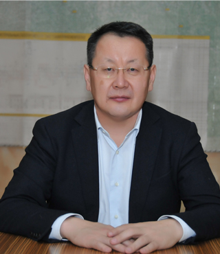
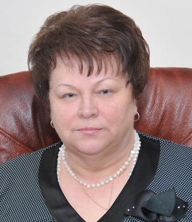
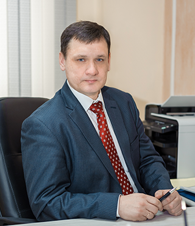
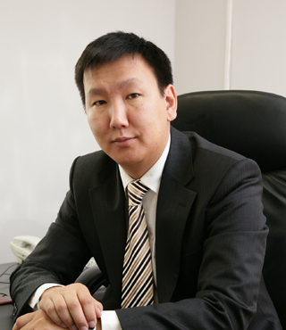
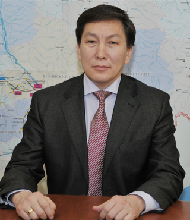
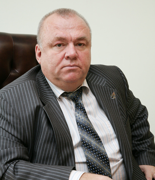

МАКАРОВ ИВАН КОНСТАНТИНОВИЧ-
Генеральный директор
Родился 24 января 1962 года в селе Сылан Чурапчинского района ЯАССР.
Образование
Окончил Благовещенский сельскохозяйственный институт по специальности «механизация сельского хозяйства» и Российскую академию государственной службы при Президенте РФ по специальности «менеджмент».
Трудовая деятельность
· 1978-1979 – зачислен в штат совхоза «Чурапчинский»
· 1979-1984 – учеба в Благовещенском сельскохозяйственном институте
· 1984-1986 – механик совхоза «Чурапчинский»
· 1986-1988 – первый секретарь Чурапчинского РК ВЛКСМ
· 1988-1989 – заведующий отделом комсомольских организаций ОК ВЛКСМ
· 1989-1990 – заведующий отделом организации и кадровой работы ОК ВЛКСМ
· 1990-1998 – генеральный директор РДК «Интеррос»
· 1998-2011 – генеральный директор ОАО НК «Туймаада-нефть»
· 2011 – генеральный директор АО «Сахатранснефтегаз»
Награды
Награды · Заслуженный работник народного хозяйства РС (Я)
· Почетный гражданин Чурапчинского улуса
· Отличник сельского хозяйства РС (Я)
· Нагрудной знак Нефтегазстройпрофсоюза России "Диалог и партнерство"

АДАМОВА ГАЛИНА ДЕМЬЯНОВНА -
Первый заместитель генерального директора
Образование
Харьковское училище (1971) Константиновский сельскохозяйственный техникум (1979) Иркутский институт народного хозяйства по специальности «бухгалтерский учет и анализ хозяйственной деятельности» (1992)
Трудовая деятельность
· 1971-1982 – бухгалтер колхоза «Красное знамя»
· 1983-1995 – старший бухгалтер учебно-курсового комбината, заместитель главного бухгалтера, главный бухгалтер Вилюйской нефтегазоразведочной экспедиции
· 1998 – главный бухгалтер ГП «Якутнефтепродукт»
· 1998-2011 – заместитель генерального директора по экономике и финансам, первый заместитель генерального директора по экономике и финансам ОАО НК «Туймада-нефть»
· 2011 – первый заместитель генерального директора АО «Сахатранснефтегаз»
Награды
· Почетный работник торговли РС (Я)
· Заслуженный экономист РС (Я)
· Отличник сельского хозяйства РС (Я)
· Отличник разведки недр России
· Грамота Правительства РС (Я)
· Почетная грамота Государственного Собрания (Ил Тумэн) РС (Я)

ВАДЮХИН ГЕНАДИЙ ВАЛЕРЬЕВИЧ -
Первый заместитель генерального директора
Родился 22 апреля 1971 года в городе Мирном ЯАССР.
Образование
Окончил Братский индустриальный институт (1993г.) по специальности "Промышленное и гражданское строительство" и Новосибирский архитектурно-строительный университет (1999г.) по специальности "Экономика и управление в строительстве".
Трудовая деятельность
· 1993-2002 – инженер отдела гражданского строительства, инженер-конструктор 2 категории, инженер-проектировщик 2 категории группы эксплуатации "ОПАЛ", ведущий инженер программист сектора проектной документации АК "АЛРОСА"
· 2002-2003 – и.о. начальника отдела новых форм организации труда, управления и заработной платы АК "АЛРОСА"
· 2003-2009 – заместитель председателя постоянного комитета по экономической, инвестиционной и промышленной политике, заместитель Председателя Госсобрания, Первый заместитель Председателя Госсобрания (ИлТумэн) РС (Я)
· 2009-2013 – главный федеральный инспектор по РС(Я) аппарата полномочного представителя Президента РФ в Дальневосточном Федеральном округе
· 2013-2014 - и.о. первого заместителя Председателя Правительства РС(Я), первый заместитель председателя Правительства РС(Я)
· 2015 – первый заместитель генерального директора АО "Сахатранснефтегаз"
Награды
· Грамота Президента РС(Я) Почетная грамота Государственного собрания (Ил Тумэн)

ГОГОЛЕВ АЛЕКСАНДР ВАСИЛЬЕВИЧ -
Главный инженер
Родился 5 июня 1980 года в городе Вилюйске ЯАССР.
Образование
Окончил Московский государственный технический институт им. Н.Э. Баумана по специализации «гидравлические машины, гидропроводы и гидропневмоавтоматика».
Трудовая деятельность
· 2003 – инженер ОАО "Лизинг экологических проектов" (Москва)
· 2003-2004 – инженер ОАО "Якутгазпром"
· 2004-2005 – ведущий специалист производственно-технического отдела АО "Сахатранснефтегаз"
· 2005 – заместитель генерального директора по производству, главный инженер АО "Сахатранснефтегаз"
Награды
· Медаль "Нефтегазовый комплекс. За славный труд"

ПОПОВ ВАСИЛИЙ ИВАНОВИЧ -
Заместитель генерального директора по правовым вопросам
Родился 9 апреля 1968 года в поселке Пеледуй Ленского района ЯАССР.
Образование
Окончил Томский государственный университет им В.В. Куйбышева по специальности «правоведение».
Трудовая деятельность
· 1986 – секретарь судебного заседания Ярославского райнарсуда г. Якутска
· 1986-1988 – служба в рядах Советской армии
· 1988-1993 – студент Томского государственного университета им. В.В. Куйбышева
· 1993-1998 – ведущий юрист, главный юрист, начальник юридического отдела Комитета по драгоценным металлам, камням и валюте при Правительстве РС (Я)
· 1998-1999 – прокурор отдела по надзору за исполнением законов и законностью правовых актов Прокуратуры РС (Я)
· 1999-2000 – юрисконсульт АК "Серп и молот"
· 2000-2010 – начальник юридического отдела, начальник правового управления, заместитель генерального директора по правовым вопросам АК "Якутскэнерго"
· 2010-2011 – заместитель директора по правовым вопросам ООО "Саян-строй"
· 2011 – заместитель генерального директора по правовым вопросам АО "Сахатранснефтегаз"
Награды
· Благодарность Министерства топлива и энергетики РФ
· Почетная грамота РАО "ЕЭС России"
· Почетная грамота Государственного Собрания (Ил Тумэн) РС (Я)
· Почетная грамота Совета судей РС (Я)
· Благодарность Квалификационной Коллегии судей РС(Я)
· Почетная грамота Окружной Администрации города Якутска
· Заслуженный юрист РС(Я)

ПОПОВ АЛЕКСАНДР ЮРЬЕВИЧ -
Заместитель генерального директора по бурению и геологии
Родился 8 сентября 1957 года в городе Грозный.
Образование
Окончил Иркутский политехнический институт по специальности "технология и техника разведки месторождений полезных ископаемых".
Трудовая деятельность
· 1974-1975 - ученик слесаря по ремонту турбобуров треста "Якутнефтегазразведка"
· 1975 - слесарь по трубопроводам РММ треста "Якутнефтегазразведка"
· 1975-1980 - учеба в Иркутском политехническом институте
· 1980-1981 - помощник бурильщика четвертого разряда, помощник бурового мастера Вилюйской нефтеразведочной экспедиции треста «Якутнефтегазразведка»
· 1981-1983 - буровой мастер Вилюйской нефтеразведочной экспедиции треста "Якутнефтегазразведка"
· 1983 - инженер-технолог Центральной инженерно-технологической службы Вилюйской нефтегазоразведочной экспедиции ПГО "Ленанефтегазгеология"
· 1983-1984 - старший инженер-технолог Центральной инженерно-технологической службы Вилюйской нефтегазоразведочной экспедиции ПГО "Ленанефтегазгеология"
· 1984-1985 - заместитель начальника Центральной инженерно-технической службы Вилюйской нефтегазоразведочной экспедиции ПГО «Ленанефтегазгеология»
· 1985 - начальник инженерно-технологической службы Вилюйской нефтегазоразведочной экспедиции ПГО "Ленанефтегазгеология"
· 1985-1986 - главный инженер Вилюйской нефтегазоразведочной экспедиции ПГО "Ленанефтегазгеология"
· 1993-1999 - заместитель начальника цеха "Цех добычи газа № 1 ГП "Якутгазпром"
· 1999-2001 - начальник Управления производственно-технической комплектации снабжения и транспорта ОАО "Якутгазпром"
· 2001 - заместитель генерального директора по Вилюйскому региону ОАО «Якутгазпром»
· 2004-2006 - заместитель генерального директора по геологии и бурению АО "Сахатранснефтегаз"
· 2006 - заместитель генерального директора по Вилюйскому региону АО "Сахатранснефтегаз"
Награды
· Заслуженный работник народного хозяйства РС (Я)
· Почетный работник газовой промышленности РФ
· Медаль "Нефтегазовый комплекс. За славный труд"
· Отличник разведки недр России
· Грамота Президента РС (Я)

ШВАНОВ АЛЕКСАНДР НИКОЛАЕВИЧ -
Заместитель генерального директора по безопасности, режиму ГО ЧС и мобилизационной работе
Родился 2 ноября 1954 года.
Образование
Томское высшее военное училище (1976) Военно-инженерная академия им. Куйбышева (1988) Академия гражданской защиты МЧС России (2001).
Трудовая деятельность
· 1976-2005 – военная служба (лейтенант-полковник)
· 1996-2005 – первый заместитель МЧС России по Республике Саха (Якутия)
· 2005 – заместитель генерального директора по безопасности, режиму ГО ЧС и мобилизационной работе АО "Сахатранснефтегаз"
Награды
· "Орден Мужества" РФ
· Медаль "За боевые заслуги" СССР
· Знак отличия "Гражданская доблесть" РС (Я)
· Памятный знак "За участие в восстановительных работах по ликвидации последствий стихийных бедствий РС (Я)
· Грамота Правительства РС (Я) "За заслуги в области социально-экономического развития республики"
· Медаль "Нефтегазовый комплекс. За славный труд"
· Памятная медаль "В память о восстановлении города Ленска"
· Памятная медаль МЧС России "Маршал Василий Чуйков"
· Грамота Главы РС (Я)
ПОПОВА УЛЬЯНА НИКОЛАЕВНА -
Главный бухгалтер
Образование
Окончила Благовещенский сельскохозяйственный институт (1988) по специальности экономист-организатор.
Трудовая деятельность
· 1988-1994 – заместитель главного бухгалтера планово-учетного отдела с-за им. П.Алексеева ЯАССР
· 1994-1996 – главный специалист отдела финансов, заместитель начальника отдела бухучета Министерства с/х РС (Я)
· 1996-2002 – главный специалист отдела ценных бумаг , главный бухгалтер Страховая компания «САПИ-полис»
· 2002-2010 – заместитель начальника Департамента экономики и финансов-главный бухгалтер, руководитель Департамента финансов, бухгалтерского учета , отчетности и налогообложения –главный бухгалтер Министерства с/х РС (Я)
· 2010-2013 – первый заместитель генерального директора ОАО «Лизинговая компания «Туймаада – Лизинг»
· 2012 – главный бухгалтер АО «Сахатранснефтегаз»
Награды
· Почетная грамота и серебряный знак Министерства сельского хозяйства РС (Я)
· Почетная грамота Министерства сельского хозяйства РС (Я)
· Юбилейный знак «375 лет Якутия с Россией»
· Отличник сельского хозяйства РС (Я)
· Грамота Правительства РС (Я)
· Заслуженный экономист РС (Я)
.png)